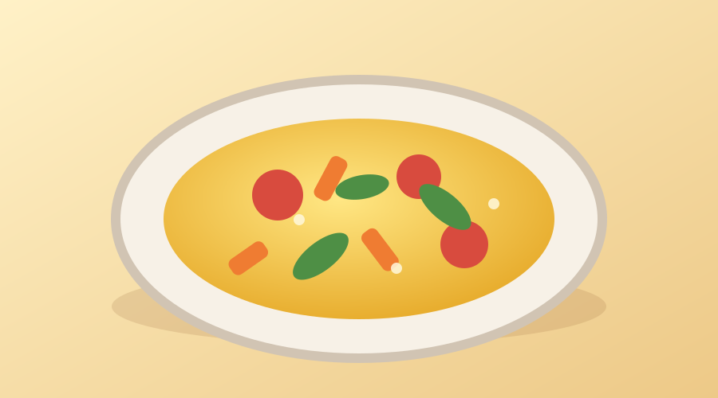

Omelete de Legumes

Ingredientes
- 2 ovos
- 1/2 tomate picado
- 1/2 cenoura pequena ralada
- 2 colheres de cheiro-verde picado
- 1 pitada de sal
- 1 fio de azeite
Modo de Preparo
- Quebre os ovos em uma tigela e bata com um garfo.
- Acrescente o tomate, a cenoura, o cheiro-verde e o sal.
- Aqueça o azeite em uma frigideira e despeje a mistura.
- Cozinhe em fogo baixo, vire a omelete e doure o outro lado.